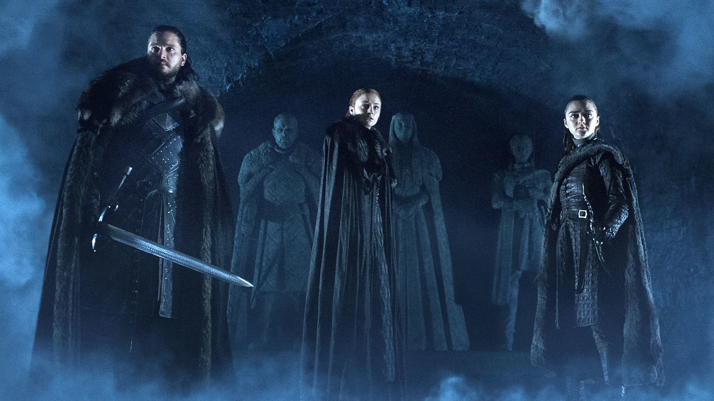
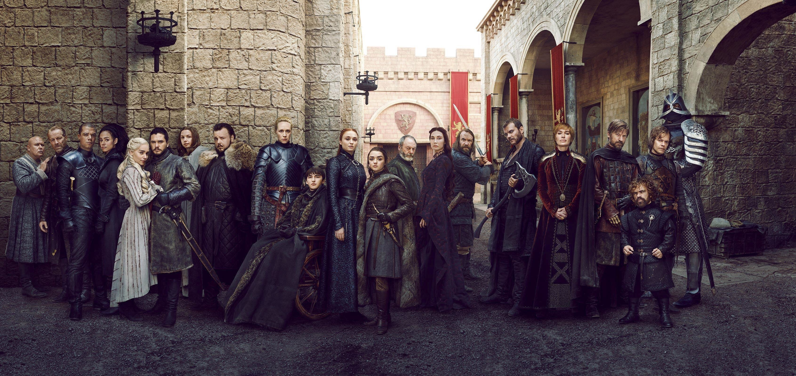

Synopsis of the Seasons
Trying to break down the seaons of Game of Thrones is like swallowing a bag of rocks. It's painful. And what's the reward you might ask, well, knowledge of the cool and epic lore of the GOT universe. Despite it's short comings, the show has a lot to offer in the entertainment aspect. Even the slow burning episodes manage to keep you locked in wondering who to trust, who's fighting on who's side, and jesus christ how many sides are there? Don't fret, it's much easier to manage towards the end when just about all of them are dead. Spoiler alert. Regardless, if you happen to find yourself wondering what happened each season and why, I'm about to tell you.
The Seasons
Season One (2011): The War of The Starks vs. The Lannisters Begins
Plot: King Robert Baratheon asks his old friend Eddard "Ned" Stark to become Hand of the King after Jon Arryn’s mysterious death. Ned discovers that Queen Cersei Lannister’s children are illegitimate (fathered by her brother Jaime). Across the Narrow Sea, exiled Princess Daenerys Targaryen is married to Dothraki warlord Khal Drogo. The season ends with Ned executed, civil war brewing, and Daenerys hatching three dragons.
Key Characters & Motivations: Ned Stark: Driven by honor; investigates the crown’s secrets → executed for treason. Cersei & Jaime Lannister: Protect their incestuous secret and children at all costs. Tyrion Lannister: Witty outsider, seeks survival and influence. Daenerys Targaryen: Initially pawn in her brother’s ambitions, grows into her own power. Robb Stark: Declares war on the Lannisters after his father’s death.
Season Two (2012): The War of The Five Petty Kings
Plot: Several claimants fight for the Iron Throne: Joffrey (Lannisters), Stannis Baratheon, Renly Baratheon, Robb Stark, and Balon Greyjoy. Stannis attacks King’s Landing but is defeated in the Battle of Blackwater thanks to Tyrion’s wildfire strategy and Tywin’s timely arrival. Theon Greyjoy betrays the Starks, seizing Winterfell. Beyond the Wall, Jon Snow joins the Night’s Watch on a ranging mission.
Key Characters & Motivations: Tyrion: Hand of the King, trying to keep Joffrey’s cruelty from ruining everything. Stannis Baratheon: Believes himself rightful king; guided by Melisandre’s prophecy. Robb Stark: Seeks independence for the North. Theon Greyjoy: Torn between Stark loyalty and Greyjoy pride → chooses his father. Jon Snow: Struggles with duty vs. compassion while infiltrating the wildlings. Daenerys: Protects her dragons and seeks followers in Qarth.
Season Three (2013): The Red Wedding
Plot: Robb Stark wins battles but loses alliances after breaking his marriage pact → leading to the Red Wedding, where Robb, Catelyn, and many bannermen are slaughtered by the Freys and Boltons under Lannister orders. Jon lives among wildlings but breaks their trust. Daenerys frees slaves in Astapor and Yunkai, growing her army.
Key Characters & Motivations: Robb Stark: Pride and love lead him to break political promises → downfall. Tywin Lannister: Ruthlessly consolidates Lannister power. Jaime Lannister: Captured, loses his hand, develops bond with Brienne. Jon Snow: Torn between loyalty to wildlings and vows to the Night’s Watch. Daenerys: Becomes a liberator, embracing her identity as "Breaker of Chains."
Season Four (2014): Power Shifts and Tyrion's Trial
Plot: King Joffrey is poisoned at his wedding ("Purple Wedding"). Tyrion is blamed, put on trial, and demands trial by combat → Oberyn Martell fights the Mountain but dies. Tyrion kills his father Tywin and flees. Jon defends the Wall against a massive wildling assault. Daenerys rules Meereen but struggles with being queen.
Key Characters & Motivations: Tyrion: Fighting for survival, ultimately breaks from his family. Oberyn Martell: Seeks vengeance for his sister Elia → dies in duel. Jon Snow: Becomes a leader defending the Wall. Daenerys: Learning that ruling is harder than conquest. Cersei: Obsessed with protecting her children and crushing Tyrion.
Season Five (2015): Rise of The Sparrows, Fall of Stannis
Plot: In King’s Landing, the Faith Militant (Sparrows) gain power, humiliating Cersei. Stannis marches on Winterfell but is defeated and killed. Jon becomes Lord Commander, allies with wildlings, but is murdered by mutineers. Daenerys faces rebellion in Meereen, is carried away by a dragon, and surrounded by Dothraki.
Key Characters & Motivations: Cersei: Tries to use the Sparrows to weaken rivals → trapped by them instead. Stannis: Obsessed with destiny, sacrifices his daughter → loses everything. Jon Snow: Believes the real war is against the White Walkers, not politics. Daenerys: Balancing her role as liberator vs. queen. Arya: Begins training with Faceless Men.
Season Six (2016): Jon's Resurrection and Cersi's Rise
Plot: Jon Snow is resurrected by Melisandre, wins the Battle of the Bastards with Sansa against Ramsay Bolton, and is declared King in the North. Cersei destroys the Great Sept with wildfire, killing her enemies and becoming Queen. Daenerys builds alliances and sails for Westeros. Bran Stark trains as the Three-Eyed Raven and sees the truth of Jon’s parentage.
Key Characters & Motivations: Jon Snow: Reluctant leader, becomes symbol of Northern resistance. Sansa Stark: Learns political cunning, reclaims Winterfell. Cersei: Ruthlessly eliminates all opposition. Daenerys: Finally sets her eyes on Westeros. Bran: Becomes a mystical figure tied to the past and future.
Season Seven (2017): The Long Night Approaches
Plot: Daenerys lands in Westeros, allies with Jon Snow, and wages war against the Lannisters. Jon and Daenerys grow close. Bran and Sam reveal Jon is the legitimate son of Rhaegar Targaryen and Lyanna Stark. The Night King destroys the Wall with undead Viserion.
Key Characters & Motivations: Jon Snow: Seeks alliances against the White Walkers, bends the knee to Daenerys. Daenerys: Struggles between conquest and justice, falls in love with Jon. Cersei: Pretends to help fight the dead but plots to betray everyone. Arya & Sansa: Work together to outmaneuver Littlefinger. Night King: Advances south with unstoppable force.
Season Eight (2019): The Endgame
Plot: The living unite at Winterfell for the Battle of the Long Night, where Arya kills the Night King. Afterward, Daenerys turns tyrannical in the Battle of King’s Landing, burning civilians despite victory. Jon kills Daenerys to save Westeros from her rule. Bran is crowned king; Sansa becomes Queen in the North; Arya sails west; Jon returns to the Night’s Watch.
Key Characters & Motivations: Daenerys: Believes only fire and fear will "free the world" → downfall. Jon Snow: Duty over love; kills Daenerys to prevent tyranny. Cersei & Jaime: Die together in King’s Landing’s collapse. Arya: Ends her vengeance arc, chooses exploration. Sansa: Claims independence for the North. Bran: Becomes king, embodying memory and history.
